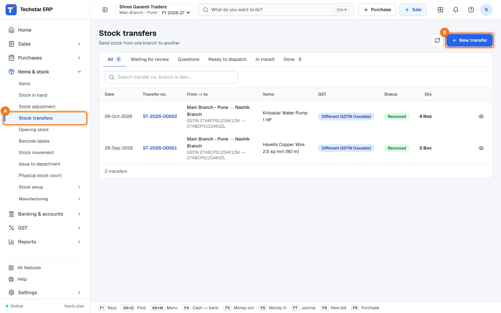
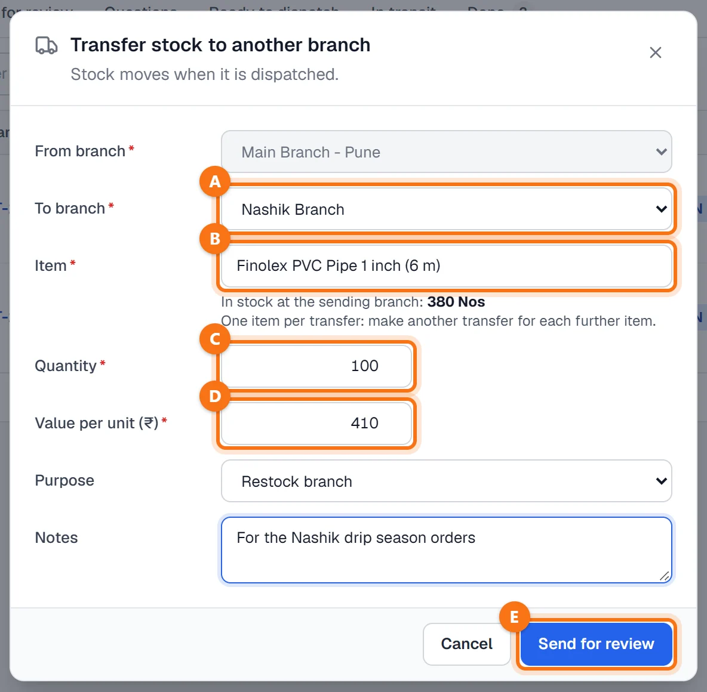
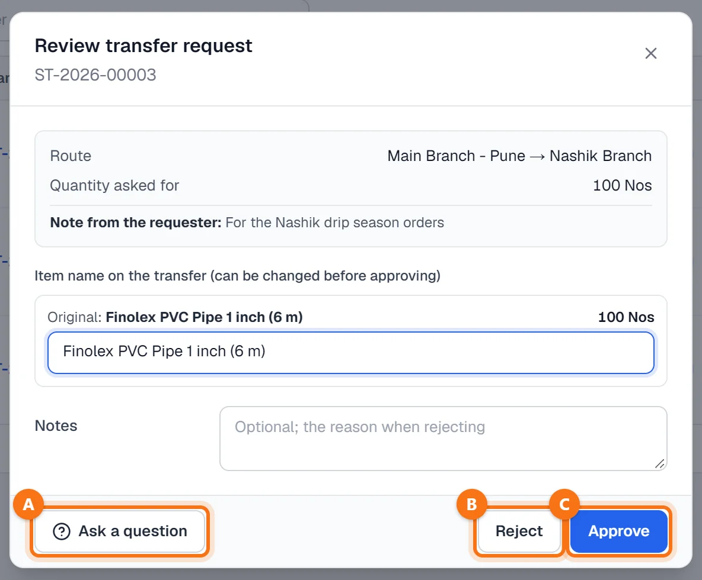
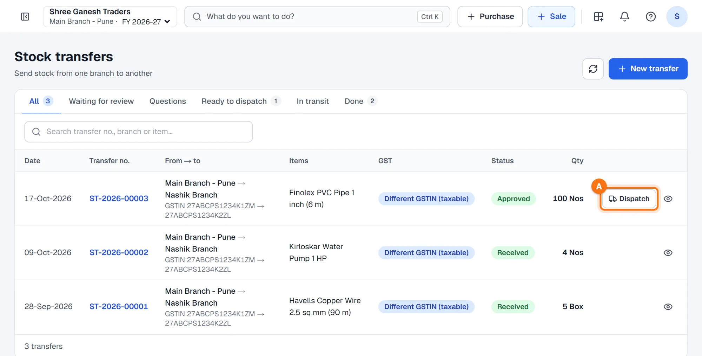
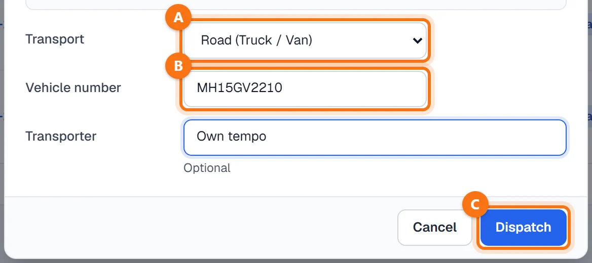
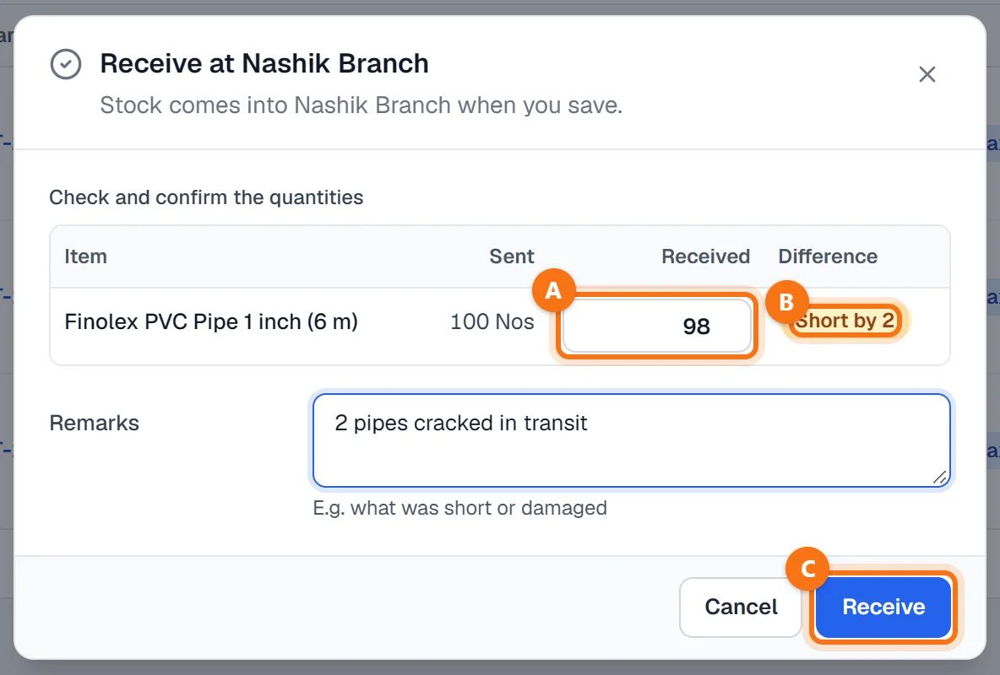
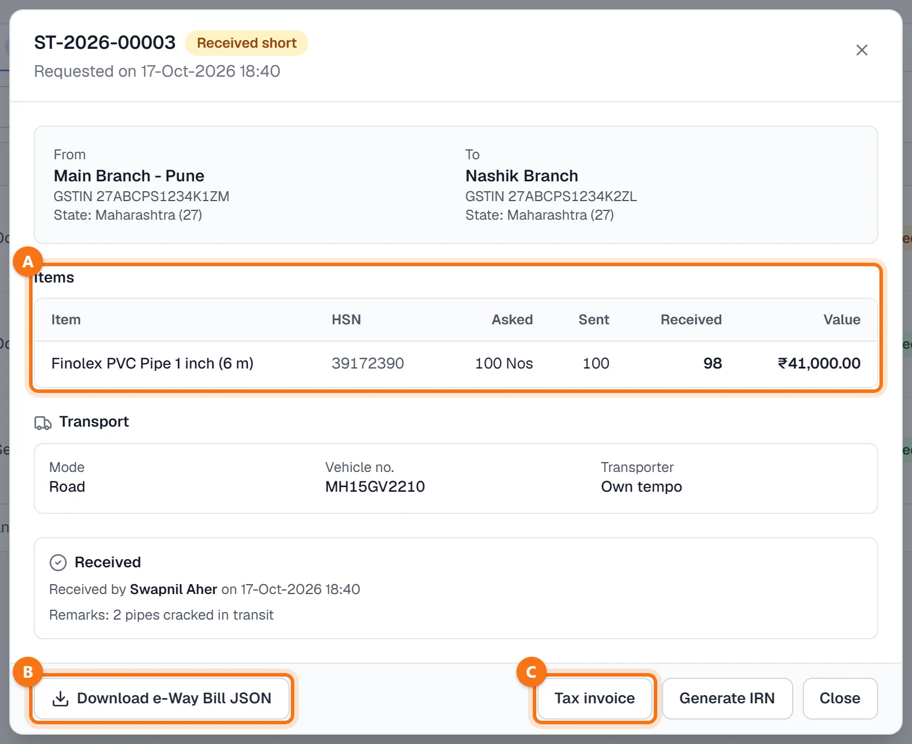

Techstar ERP मराठी आणि हिंदीतही वापरता येतो. वर उजवीकडे तुमच्या नावाच्या आद्याक्षराच्या गोल बटणावर click करा → Language (भाषा) → मराठी. ERP चा menu मराठीत दिसतो (उदा. Sales = विक्री). बिले आणि इतर कायदेशीर कागदपत्रे नेहमीप्रमाणेच छापली जातात. या guide मधले screenshots English menu चे आहेत.
सुरू करण्यापूर्वी
दोन शाखा हव्यात (Settings → Branches & bill numbering), HSN कोडसह आयटम (पहा आयटम कसा जोडायचा) आणि पाठवणाऱ्या शाखेत त्याचा पुरेसा स्टॉक.
कोण काय करतो: मालक, admin, accountant किंवा branch manager मागणी तपासतात (मंजूर करणे, प्रश्न विचारणे किंवा नाकारणे). एखाद्या शाखेशी जोडलेला स्टाफ फक्त आपल्या शाखेतून माल पाठवू शकतो आणि फक्त आपल्या शाखेत स्वीकारू शकतो.
Stock transfers उघडा
डाव्या menu मध्ये Items & stock → Stock transfers A वर click करा (मराठी menu मध्ये: आयटम आणि स्टॉक → स्टॉक ट्रान्सफर), मग + New transfer B.
यादीत प्रत्येक ट्रान्सफरची तारीख, नंबर, दोन्ही शाखा आणि त्यांचे GSTIN, आयटम, स्टेटस आणि नग दिसतात. टॅब टप्प्यानुसार दाखवतात: Waiting for review, Questions, Ready to dispatch, In transit आणि Done.

ट्रान्सफरची मागणी करा
Transfer stock to another branch विंडो उघडते — Stock moves when it is dispatched. (पाठवल्यावरच स्टॉक हलतो.)
- From branch — पाठवणारी शाखा (तुमचा युजर एखाद्या शाखेचा असेल तर तीच ठरलेली). To branch A — माल घेणारी शाखा.
- Item B — शोधा किंवा स्कॅन करा. पाठवणाऱ्या शाखेतील स्टॉक बॉक्सखाली दिसतो. एका ट्रान्सफरमध्ये एकच आयटम: पुढच्या प्रत्येक आयटमसाठी वेगळे ट्रान्सफर करा.
- Quantity C — पाठवणाऱ्या शाखेतील स्टॉकपेक्षा जास्त नाही.
- Value per unit (₹) D — आयटमच्या खरेदी दराने भरलेले असते; ट्रान्सफरच्या कागदांवर आणि ई-वे बिलावर हीच किंमत वापरली जाते.
- Purpose — Restock branch, Balance stock, Customer order किंवा Return to main godown — आणि दुसऱ्या शाखेसाठी Notes.
Send for review E वर click करा. ट्रान्सफरला नंबर मिळतो (उदा. ST-2026-00003) आणि ते तपासणीसाठी थांबते. अजून स्टॉक हललेला नाही.

तपासा आणि मंजूर करा
ट्रान्सफरच्या ओळीत Review वर click करा. विंडोमध्ये मार्ग, मागितलेले नग आणि मागणी करणाऱ्याची टीप दिसते; ट्रान्सफरवरील आयटमचे नाव अजूनही बदलता येते. मग:
- Ask a question A — उदा. कमी नग सुचवण्यासाठी. पाठवणारी शाखा Answer question ने उत्तर देते (नगही बदलू शकते), आणि ट्रान्सफर पुन्हा तपासणीसाठी येते.
- Reject B — कारण Notes मध्ये लिहून.
- Approve C — ट्रान्सफर पाठवण्यासाठी तयार.

माल पाठवा (Dispatch)
मंजूर ट्रान्सफरच्या ओळीत Dispatch A दिसते. माल गाडीत भरल्यावर त्यावर click करा.

Dispatch from … मध्ये Transport A (रस्ता, रेल्वे, विमान किंवा जहाज), Vehicle number B (गाडी नंबर) आणि हवे असल्यास Transporter टाका. Dispatch C वर click करा: स्टॉक आत्ताच पाठवणाऱ्या शाखेतून कमी होतो आणि ट्रान्सफर In transit (रस्त्यात) होते. किंमत आणि मार्गामुळे ई-वे बिल लागत असेल तर dispatch नंतरचा संदेश तसे सांगतो.

दुसऱ्या शाखेत स्वीकारा
माल पोहोचल्यावर ट्रान्सफरवर Receive वर click करा. प्रत्येक आयटमचे पाठवलेले नग (Sent) दिसतात:
- Received A — माल मोजा आणि जेवढा आला तेवढा टाका.
- Difference B — Matches (जुळले), Short by … (इतके कमी) किंवा Extra … (इतके जास्त).
- Remarks — उदा. काय कमी किंवा खराब आले.
Receive C वर click करा. आलेले नग माल घेणाऱ्या शाखेच्या स्टॉकमध्ये जमा होतात, आणि ट्रान्सफर Received, Received short किंवा Received extra होते.

तपशील, ई-वे बिल JSON आणि टॅक्स इनव्हॉइस
तपशील उघडण्यासाठी ट्रान्सफर नंबरवर किंवा डोळ्याच्या आयकॉनवर click करा: दोन्ही शाखा GSTIN आणि राज्यासह, आयटम A मागितलेले, पाठवलेले व आलेले नग आणि किंमतीसह, वाहतूक, प्रश्न आणि कोणी स्वीकारले.
- Download e-Way Bill JSON B — रस्त्याचे अंतर (1 ते 4000 km) विचारतो आणि ई-वे बिल पोर्टलवर अपलोड करण्यासाठी फाइल डाउनलोड करतो.
- Tax invoice C आणि Generate IRN — दोन्ही शाखांचे GSTIN वेगळे असतील तेव्हा दिसतात. असे ट्रान्सफर दोन नोंदणींमधील पुरवठा (supply) असते: ERP dispatch वेळी पाठवणाऱ्या शाखेत GST आणि स्वीकारताना घेणाऱ्या शाखेत GST क्रेडिट नोंदवतो. तुम्हाला ई-इनव्हॉइस लागू असेल तर प्रिंटपूर्वी IRN बनवा — त्याशिवाय इनव्हॉइस फक्त draft म्हणून प्रिंट होते.

एकाच GSTIN खालील शाखा (एका राज्यात नेहमी असेच असते): ट्रान्सफरने फक्त त्यांच्यात स्टॉक हलतो; टॅक्स इनव्हॉइस नसते आणि Tax invoice बटणही दिसत नाही.
नेहमीचे प्रश्न
स्टॉक प्रत्यक्षात कधी हलतो?
ERP आधी HSN कोड टाकायला सांगतो.
मला अनेक आयटम पाठवायचे आहेत.
पाठवलेल्यापेक्षा कमी माल आला.
आणखी guides
Screenshots Techstar ERP मधील demo कंपनीचे आहेत (Shree Ganesh Traders, Pune). सर्व नावे, GSTIN, रकमा आणि कागदपत्रांचे नंबर नमुना माहिती आहेत.